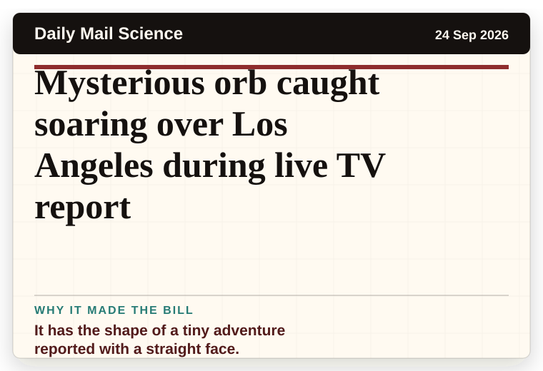
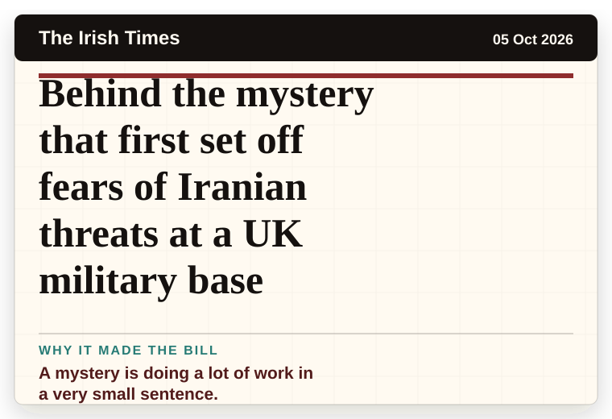
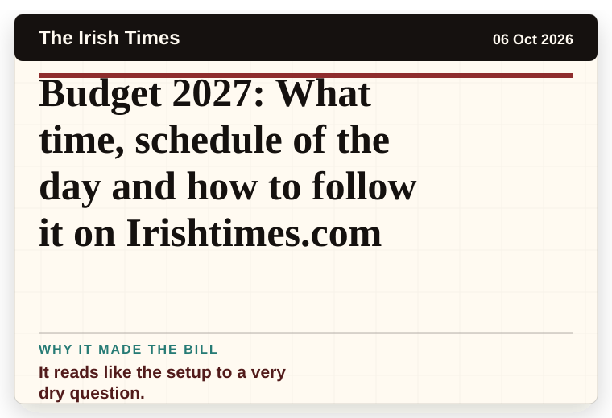

NT News
Australia
Should Kalyn Ponga have been sent to the sin bin?
A household object has somehow reached the news desk.
The latest daily picks, linked back to the original sources. Search the room, pick a source, or follow a headline out to the full story.
Record updated: 06 Oct 2026, 07:42 AM AEST
Showing 13 headline candidates from the refresh run completed on 06 Oct 2026, 07:42 AM AEST.
A household object has somehow reached the news desk.

It has the shape of a tiny adventure reported with a straight face.

A very ordinary object has wandered into serious news.

The headline is already trying not to laugh.

A very ordinary object has wandered into serious news.

A wonderfully specific detail has taken centre stage.

A wonderfully specific detail has taken centre stage.

The scale is doing deadpan comedy.

The scale is doing deadpan comedy.

It has the shape of a tiny adventure reported with a straight face.

The object list sounds like someone shuffled three different stories together.

A mystery is doing a lot of work in a very small sentence.

It reads like the setup to a very dry question.